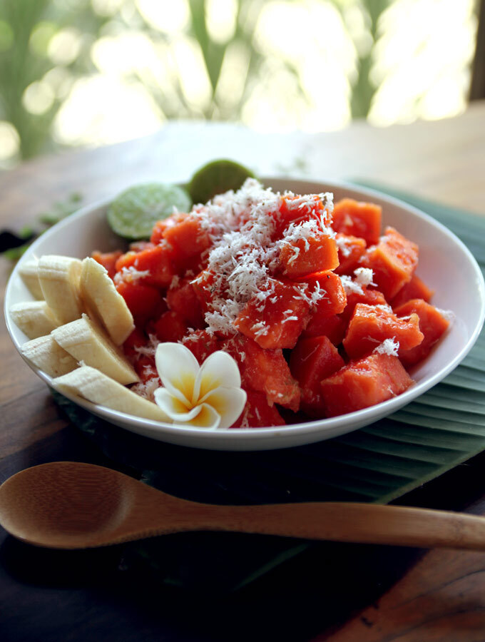
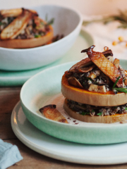
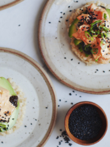
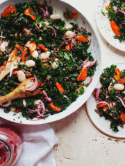

Your journey to becoming a vegeterian
BALI BLISS PAPAYA SALAD
A delicious combination for starting your day on the right foot, or maybe an afternoon pick-me-up.

Serves 2-4
Ingredients:
- 1 large papaya (mine was approx. 2lbs / 1kg)
- ½ cup freshly grated or unsweetened desiccated coconut
- 1-2 organic limes
- 2-3 tsp. finely minced ginger, to taste
- pinch sea salt
- 2 tsp. honey, to taste (or any liquid sweetener)
- 1 Tbsp. virgin coconut oil, melted (optional)
Directions:
- Rinse the papaya well. Slice through the entire fruit lengthwise, then scoop out the seeds. Cut off both ends from each half. Stand one of the halves on its flat end and slice off the skin starting at the top and running down to the base. Repeat with another half. Next slice the papaya across into 1-inch sections, and then into 1-inch cubes. Place in a large bowl.
- Rinse the lime and zest it with a Microplane or box grater on the finest setting. Whisk together the ginger, lime zest, lime juice, honey and salt. Add the coconut oil, if desired. Pour dressing over the papaya just before serving, add desiccated coconut, and fold gently to combine. Enjoy immediately. I served the salad with some sliced bananas on the side and garnished with lime halves.
YOU MAY ALSO LIKE…
  